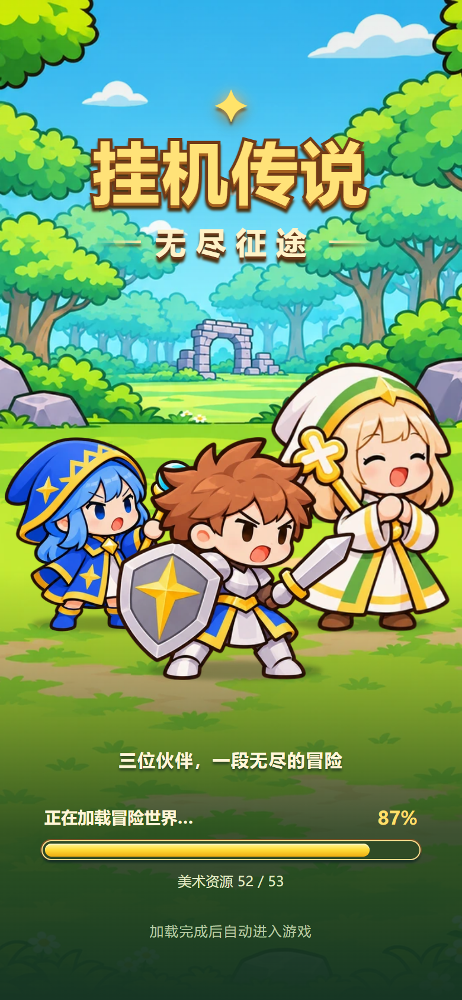
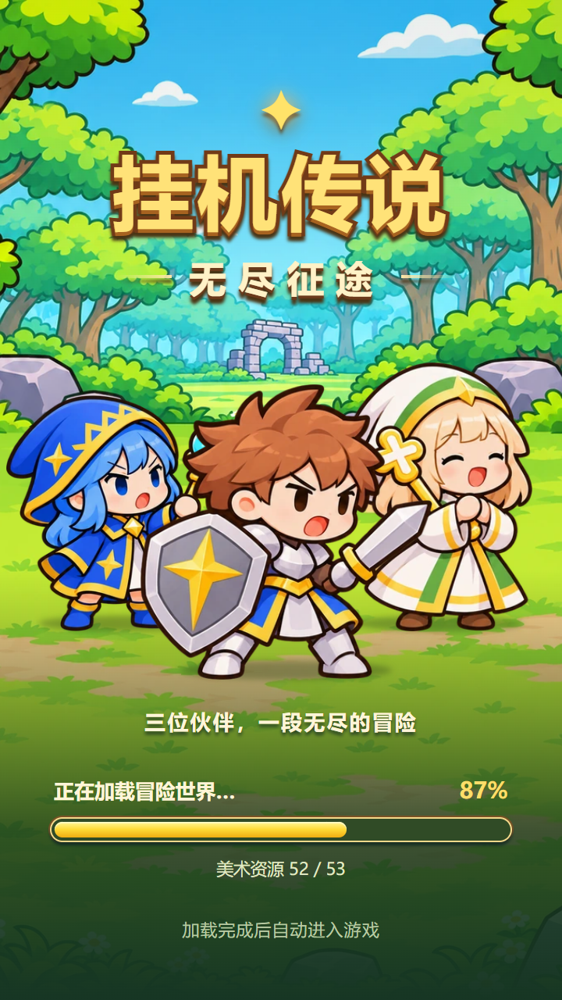
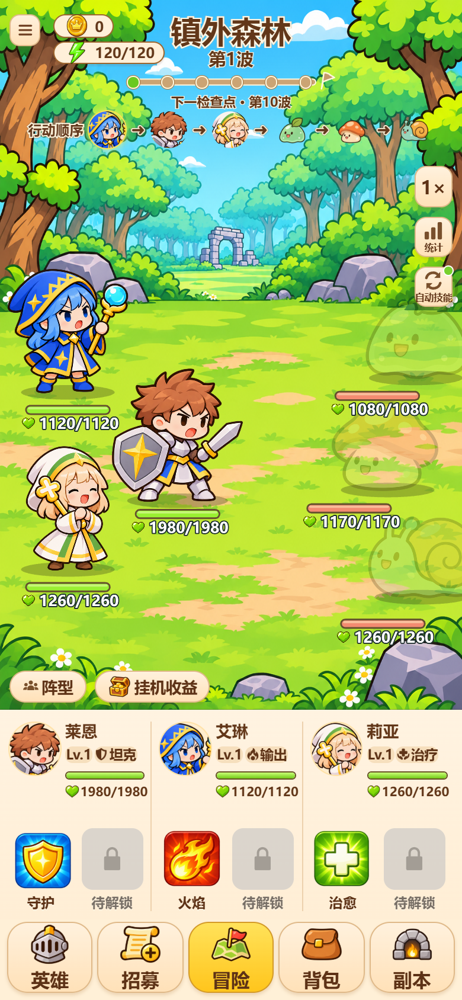

2026-11-22 · 打开游戏先显示自有加载页；全部美术下载、校验、解码，Cocos纹理和界面派生图标准备完毕后，进度到100%并自动进入游戏。没有账号登录步骤。



| 场景 | 结果 |
|---|---|
| 首次加载 | 49张游戏美术＋4张轻量启动素材全部完成；未完成前不生成可交互的游戏界面，进度单调增加。 |
| 重复进入 | 53/53命中CacheStorage；图片网络请求0次。 |
| 缓存文件损坏 | 字节数与SHA-256校验发现异常；仅重新下载对应1张。 |
| 美术内容更新 | 同一地址内容哈希改变后仅更新1张；未变资源继续复用。 |
| 加载失败 | 不进入游戏；显示“重新加载”，保留成功缓存，重试可正常进入。 |
| 存储禁止／空间不足 | 降级联网加载，仍完成全部资源校验与解码。 |
| GitHub Pages版本子路径 | 根入口＋releases目录base路径加载正常，跨版本缓存使用所属游戏路径隔离。 |
| Cocos启动动画 | 构建时清除logo/background，totalTime=0；由构建校验阻止回退。 |
| 游戏回归 | 29个界面，145组布局检查和真实交互/存档刷新通过。 |
缓存对象仅包含美术，不更改玩家存档；浏览器清理缓存后会重新加载，也不承诺整站离线启动。原PNG保持不变；启动页轻量副本由同一套美术生成，4张合计约305 KiB。
复验：npm run build → npm run serve → npm run test:startup